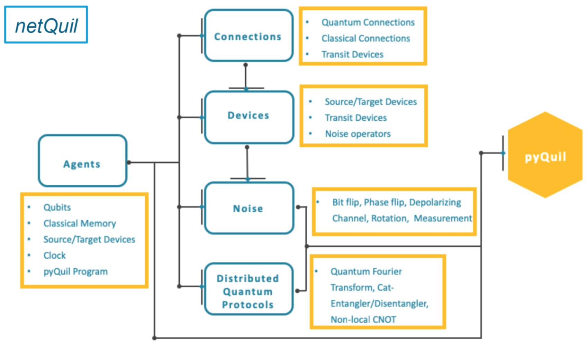

Welcome to the Docs for netQuil!¶
NetQuil is an open-source Python framework designed specifically for simulating quantum networks and distributed quantum protocol. Built on the already extensive quantum computing framework pyQuil, by Rigetti Computing, netQuil is perfect for extending your current quantum computing experiments and testing ideas in quantum network topology and distributed quantum protocol. NetQuil offers an extensible device simulator, quantum and classical noise modules, and a performant multi-threaded simulation manager. It also allows you to run multiple trials across your network, syncronize agents based on local and master clocks, and review traffic in real time with a network monitor. NetQuil is also optimized for distributed quantum protocol with its implementation of the primitive cat-entangler and cat-disentangler introduced by Yimsiriwattana Lomonaco. This primitive protocols can be used to implement non-local CNOTs, non-local controlled gates, and teleportation, and should be the backbone of any distributed quantum protocol you create.
NetQuil is developed as part of Intelligent Quantum Networks and Technologies (INQNET) that was established between AT&T and California Institute of Technology. NetQuil is a work in progress and contributions are encouraged. To learn more about features we plan to add in the future, checkout our whitepaper mentioned below. The source code can be found on Github.
netQuil WhitePaper¶
To learn more about the state of distributed quantum protocol and netQuil’s role in the field consider reading our whitepaper, “netQuil: A quantum playground for distributed protocol simulation”.
netQuil Design¶
If you are not already familiar with pyQuil we encourage you to spend some time learning this framework. Pyquil is an open-source Python library for generating and executing Quil programs on the Rigetti Forest platform. Quil programs can be executed on a quantum virtual machine (qvm), or on one of Rigetti’s real quantum processing units (QPU). The Rigetti Forest platform is the work horse behind netQuil simulations. Each netQuil simulation generates a single Quil program to be executed by a qvm or qpu and each trial run by a netQuil simulation operates on qubits from a single Quil program. For this reason, netQuil simulations are limited by Rigetti’s qubit max, and when agents send qubits between each other they are sending the index of the qubit in the program, and not the true qubit. During transmission, the ownership of the qubit in the program corresponding the to index sent is transfered between agents. This becomes important when noise and devices are added to your network. To learn about these features read the advanced usage demo. If you encounter any strange or unexpected behavior in regards to netQuil’s usage of pyQuil we encourage you to open an issue on Github. Read Getting Started to learn the basic components of any netQuil program.